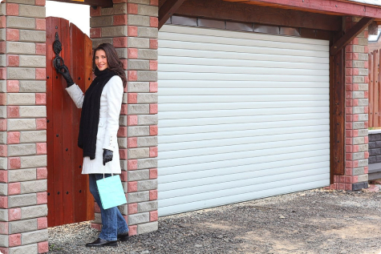

Роллетные ворота
Роллетные ворота предназначены для установки на проемы в торговых центрах, производственных и складских помещениях, а также гаражах. Благодаря компактной конструкции роллетные ворота идеально подходят для проемов, где вверху расположены инженерные коммуникации (водопровод, электропроводка и др.). Монтаж рольворот возможен как на проем, так и в проем снаружи или внутри помещений. Максимальные размеры проема для установки роллетных ворот: ширина — более 7 м, площадь — более 21 м2.

Роллетные ворота (гаражные рольставни) состоят из алюминиевых профилей, которые сворачиваются в защитный короб, расположенный в верхней части ворот. предлагает профили роликовой прокатки с мягким и твердым пенным наполнителем в 16 цветах, а также экструдированные профили — вентиляционные и смотровые — в 12 цветах. Профили роликовой прокатки в отличие от профилей для оконных роллет изготавливаются из более толстой алюминиевой ленты. Высота кроющей поверхности всех профилей для рольворот — 77 мм, толщина — 19 мм.
Основной материал для изготовления роллетных ворот и гаражных рольставен — алюминий — обеспечивает высокую устойчивость конструкции к коррозии, воздействию атмосферных осадков, перепадам температур, гарантирует прочность, надежность и экологическую чистоту.